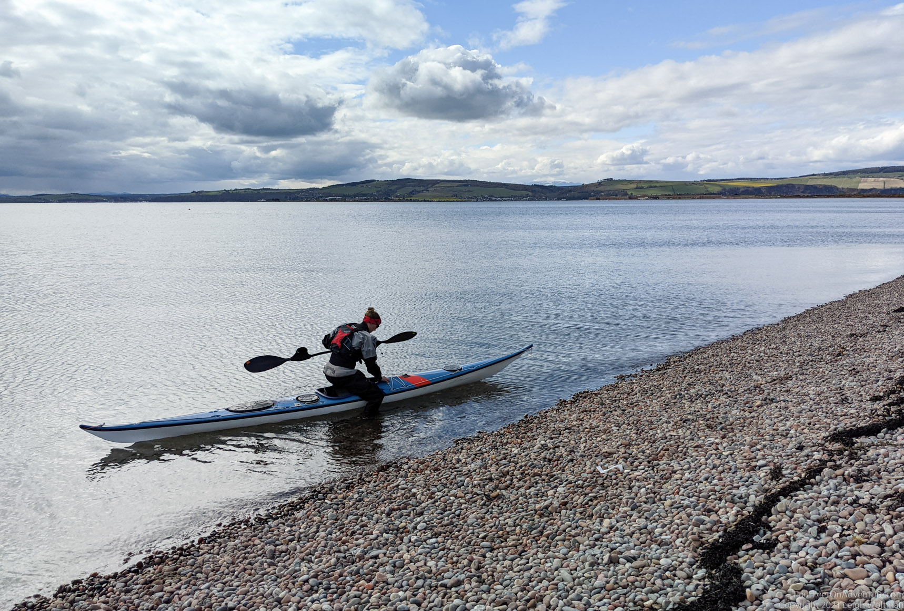
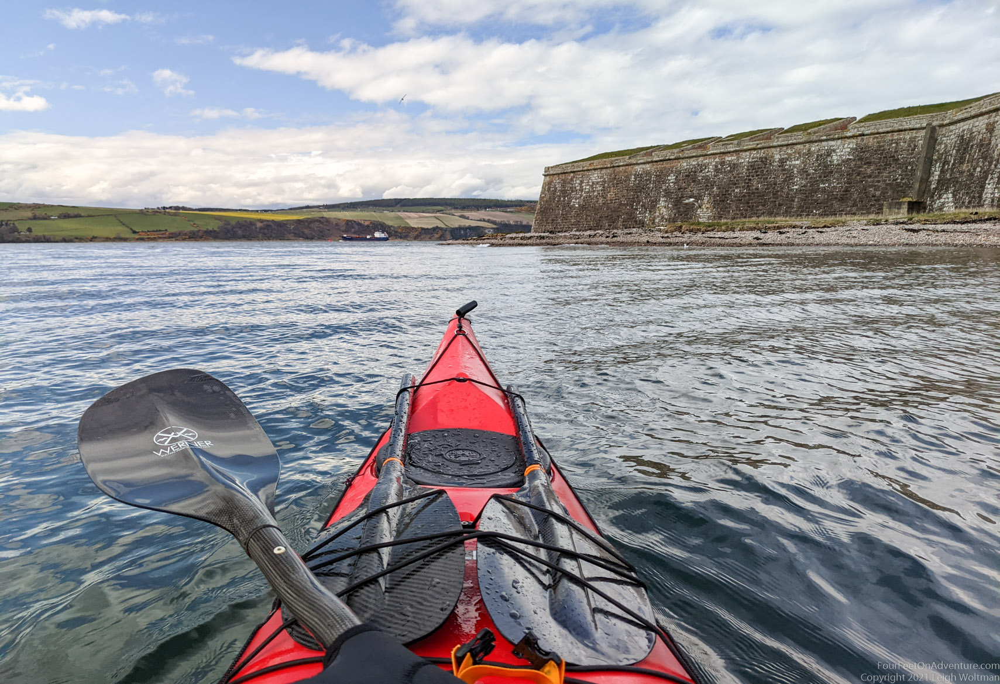
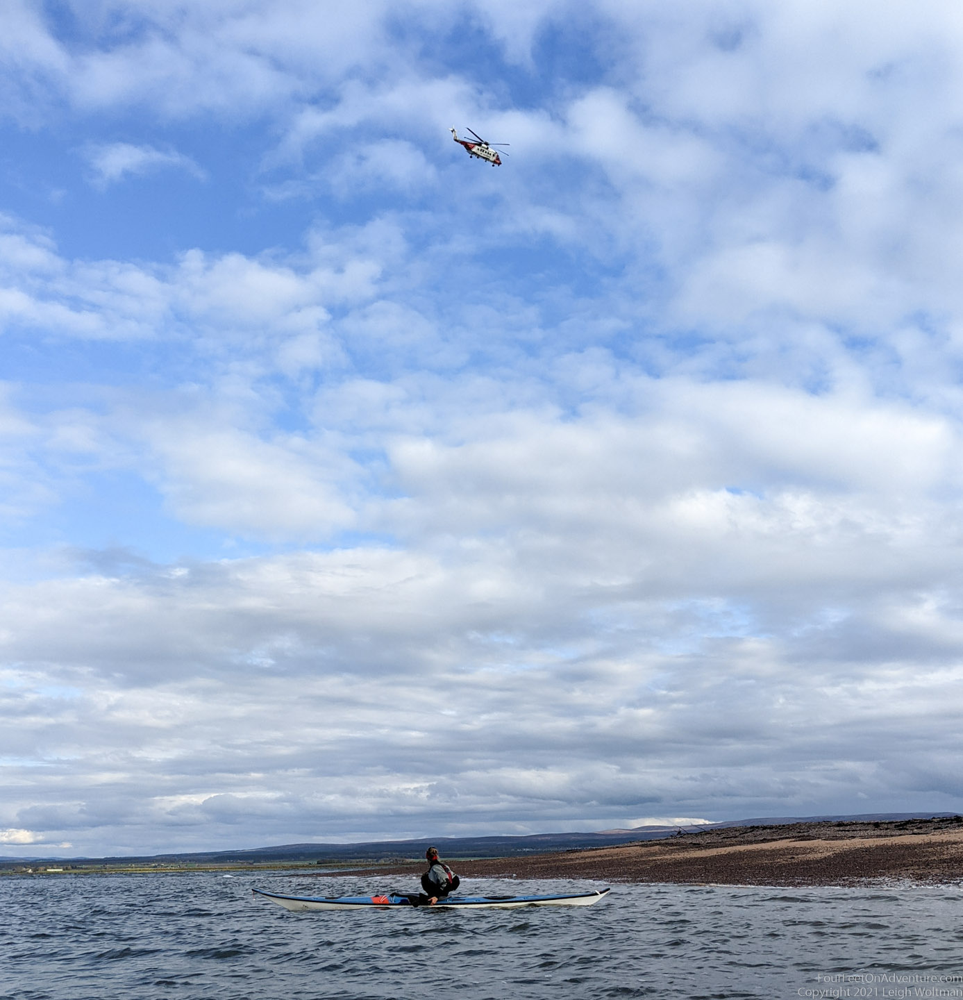

Not yet quite that warm, but lock-down had lifted and we were looking for a nearby paddle/take-out adventure. Starting point would be Ardersier, about a 10 minute drive from our house, and from there we would paddle across the firth. It is quite narrow, so you can often see bottlenose dolphins enjoying a salmon feast. A nice calm day with good views over the firth, let's find out what today brings.

On the starting side of the firth we first paddled along side Fort George. This fort has been build in response to the 1746 defeat at Culloden of Bonnie Prince Charlie. George II, in charge of Britain, created the ultimate defence against further Jacobite unrest. Fort George has been described as the mightiest artillery fortification in Britain, if not Europe, and has (probably therefore) never really been under attack. The Brittish army is still present today, but it's also open to the public and worth a visit. However, today we would just paddle alongside and try not to get nervous by all the cannons pointed at us.

We found a food place in Rosemarkie and waited for our take-out. Rosemarkie is home to some 8th-9th century pictish stones, but they were in a museum that was still closed and thus had to wait for another time.
Chanonry Ness promontory is the point that sticks out opposite Fort George. It has a lighthouse on it, and of course we couldn't resist a look on our way back.

We were not the only ones out that day. Not only did we find out later that amongst the people on shore waving at us was a collegue of Annette (they didn't know either we were the kayakers, but just felt like a friendly wave), also the coast guard was out and about, probably practising. They successfully found us, but we weren't lost. At least, not that much, aren't we all lost a little bit in some way or another...
